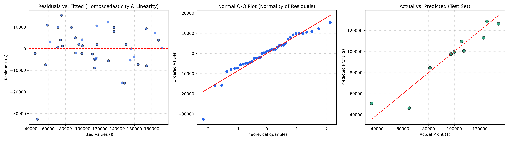

50 Startups 多元線性迴歸與利潤決策系統
運用統計學與機器學習探討新創企業研發（R&D）、行銷（Marketing）、營運管理（Administration）與所在地（State）對淨利潤（Profit）之邊際影響，實現精準投資決策預測。
最佳模型解譯力
94.74%
R² = 0.9474 雙特徵最佳模型（R&D + 行銷）
最低測試集均方根誤差
$8,198.80
RMSE 最佳點 較全特徵模型誤差縮減 $939+
核心驅動因子
R&D 研發支出
p < 0.001 每投入 $1 創造 ~$0.81 利潤
樣本與特徵維度
50 家 / 3 州
紐約・加州・佛州 80/20 嚴格交叉保留檢定
前向特徵選取分析（Forward Feature Selection）
探索不同特徵組合對模型泛化能力之影響，視覺化呈現 RMSE 最低點與 R² 變化軌跡
RMSE by Number of Features
越低越好R-squared by Number of Features
越高越好特徵組合評估對照表
（點擊任一行可切換下方預測模型）| 特徵數量 (k) | 選取特徵組合 (Selected Features) | RMSE | R-squared |
|---|
即時利潤預測與投資模擬器 (Inference Calculator)
輸入新創公司各項預算配置，即時預估預期獲利與投資報酬率（ROI）
參數調整與特徵輸入
預估分析報告
95% 統計信賴區間
預測淨利潤 (Predicted Profit)
$182,950.05
信賴區間: $165,190 ~ $200,710
總投入成本
$590,000
預估利潤率
31.0%
研發貢獻度
68.8%
模型選取
雙特徵最佳
當前模型計算方程式：
Profit = 46,346.34 + 0.7886 × (R&D) + 0.0326 × (Marketing)
50 家新創公司完整資料庫 (50 Startups Dataset)
支援依州別即時篩選、欄位排序與關鍵字搜尋
普通最小平方法（OLS）五大迴歸假設嚴謹檢驗
確保多元線性迴歸模型符合統計不偏性（Gauss-Markov 定理）
📊 Matplotlib 統計診斷圖（殘差檢驗、常態 Q-Q 分佈、真實 vs 預測對照）
高解析度 300 DPI 嚴謹檢驗